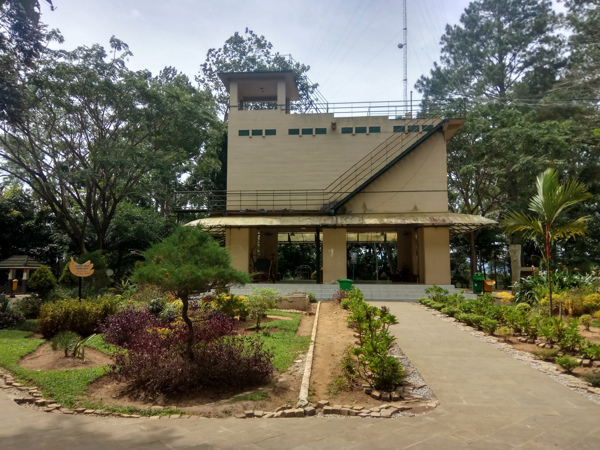
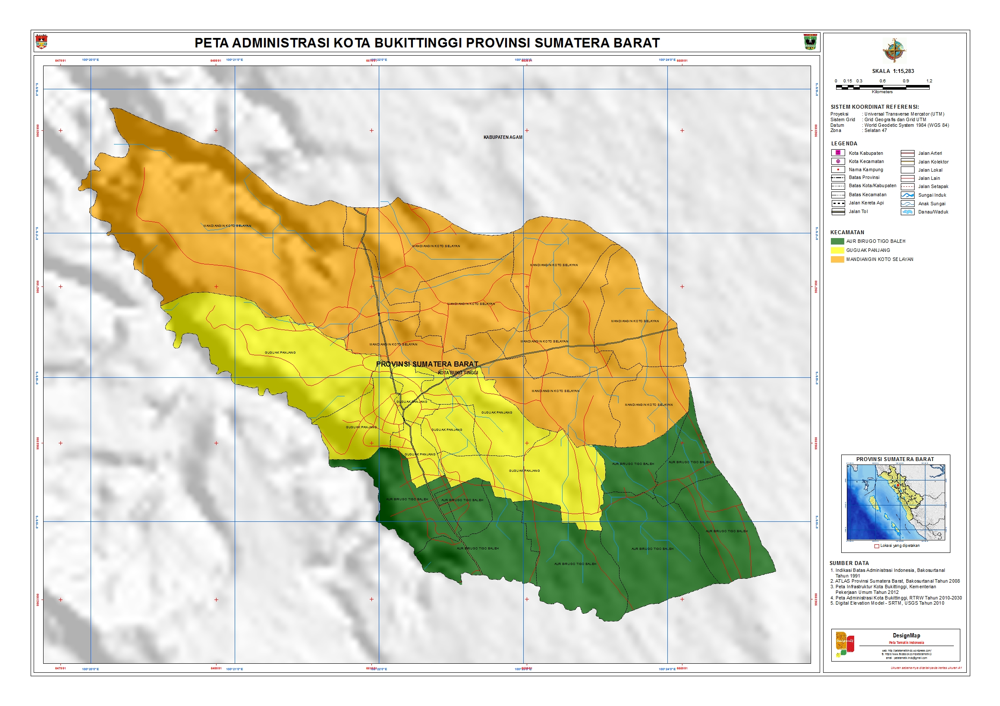
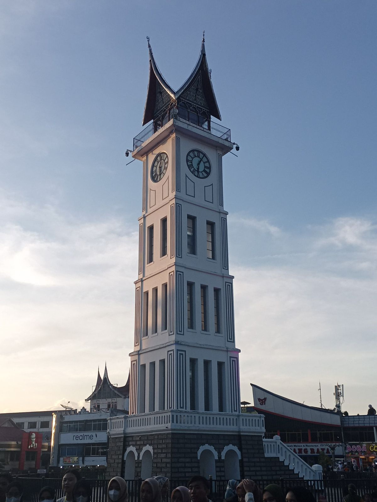
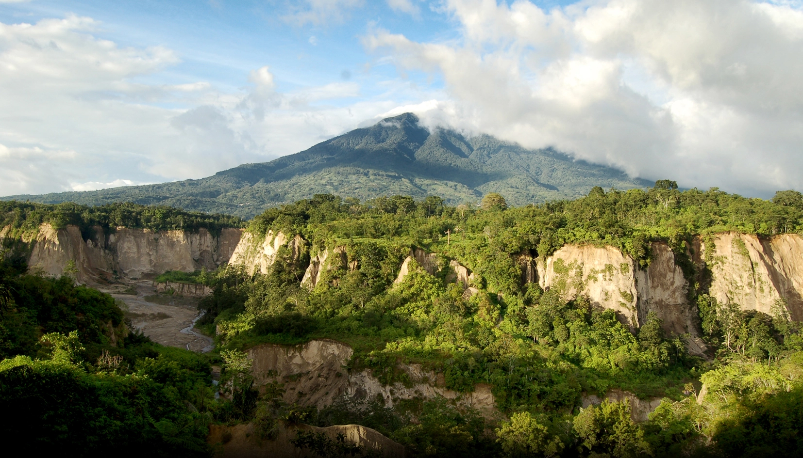

Sejarah

Sejarah Kota Bukittinggi bermula dari sebuah pasar tradisional
(pekan) yang didirikan dan dikelola oleh masyarakat Nagari Kurai di
atas kawasan perbukitan. Seiring berjalannya waktu, kawasan yang
terletak di dataran tinggi Agam ini berkembang pesat menjadi pusat
perdagangan. Pada masa Perang Padri (1803-1837), tentara kolonial
Belanda berhasil menduduki wilayah ini dan mendirikan benteng
pertahanan bernama Fort de Kock. Di bawah pemerintahan kolonial
Belanda, kota ini ditata menjadi pusat administrasi serta tempat
peristirahatan para opsir, dan sempat pula menjadi pusat
pengendalian militer Jepang untuk kawasan Sumatra pada masa Perang
Dunia II.
Geografis

Secara geografis, Kota Bukittinggi terletak pada jalur pegunungan
Bukit Barisan yang membujur di Pulau Sumatra, tepatnya berada pada
titik koordinat 0°16' sampai 0°20' Lintang Selatan dan 100°20'
sampai 100°25' Bujur Timur. Wilayah ini dikelilingi oleh dua gunung
berapi aktif, yaitu Gunung Marapi dan Gunung Singgalang, serta
berbatasan langsung di seluruh sisi daratannya dengan Kabupaten
Agam.
Kota ini berada di dataran tinggi dengan ketinggian berkisar antara
780 hingga 950 meter di atas permukaan laut (mdpl), yang memberikan
kondisi iklim berudara sejuk dengan suhu rata-rata harian berkisar
antara 16,1°C hingga 24,9°C. Secara topografi, wilayah Bukittinggi
sangat unik karena permukaannya bergelombang, berbukit-bukit, dan
diapit oleh lembah. Terdapat sekitar 27 bukit kecil yang tersebar di
dalam kota (seperti Bukit Ambacang, Bukit Mandiangin, dan Bukit
Campago) serta berbatasan langsung dengan lembah curam Ngarai Sianok
di sebelah barat. Dengan luas wilayah secara administratif sekitar
25,24 km², Bukittinggi menjadi salah satu kota dengan wilayah
terkecil namun terpadat di Provinsi Sumatera Barat.
Wisata
Kota Bukittinggi menawarkan beragam destinasi wisata unggulan yang
memadukan keindahan alam, jejak sejarah, serta kekayaan budaya
Minangkabau.
Jam Gadang

Jam Gadang adalah menara jam setinggi 26 meter yang menjadi
landmark atau ikon utama Kota Bukittinggi. Dibangun pada tahun
1926 pada masa kolonial Belanda, menara ini dirancang oleh arsitek
lokal Sutan Gigi Ameh dan Yazid Abidin. Salah satu keunikan
utamanya adalah konstruksi bangunan yang dikabarkan tidak
menggunakan rangka besi dan semen, melainkan campuran kapur, putih
telur, dan pasir. Mesin jam yang ada di keempat sisi menara
tersebut merupakan mesin khusus buatan pabrik Vortmann di
Recklinghausen, Jerman, yang juga kembar dengan mesin jam di Big
Ben, London. Kini, kawasan sekitar Jam Gadang telah ditata menjadi
taman hijau yang asri dan menjadi pusat aktivitas serta ruang
interaksi masyarakat.
Ngarai Sianok

Ngarai Sianok merupakan sebuah lembah curam dan indah yang
dikelilingi oleh dinding tebing tinggi vertikal serta dialiri oleh
anak sungai berliku di dasarnya. Secara geografis, ngarai ini
terbentuk akibat proses penurunan sebagian lempengan bumi (patahan
Semangko) yang membentang sepanjang kurang lebih 15 kilometer
dengan kedalaman dinding tebing mencapai 100 meter. Dari titik
pandang (panoramic view) yang disediakan di kawasan kota,
wisatawan dapat menikmati pemandangan hijau lembah yang berlatar
belakang kemegahan Gunung Singgalang. Tempat ini sangat populer
bagi pencinta alam, fotografi, serta wisatawan yang ingin
menikmati suasana dataran tinggi yang tenang dan sejuk.